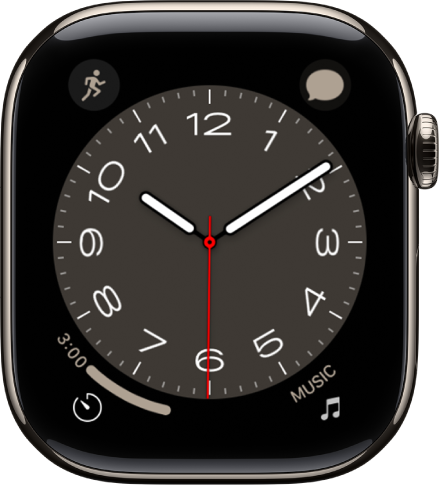

此独具风格的经典表盘具有个性化的数字设计，可随你轻点表盘并旋转数码表冠展现百变风格，字体粗细亦随之灵动变换。垂腕时，数字还可旋转为胶囊状。
下方的文件数包括本地化资源。固件名称键能确认包的归属；组件的圆屏点击边界、亮屏过渡与 AOD 对照均待设备验证。
原始包 已解析属性表 Mach-O 方法与成员 ARM64 汇编 解出的图集
.strings × 44 .plist × 2 .car × 1 无扩展名 × 1
NTKKuiperFaceBundle.bundleFACE_STYLE_KUIPER_DESCRIPTIONEDIT_MODE_LABEL_KUIPER_STYLEEDIT_MODE_LABEL_KUIPER_DIAL_3EDIT_MODE_LABEL_KUIPER_STYLE_0EDIT_MODE_LABEL_KUIPER_DIAL_0EDIT_MODE_LABEL_KUIPER_STYLE_1EDIT_MODE_LABEL_KUIPER_DIAL_2EDIT_MODE_LABEL_KUIPER_STYLE_2EDIT_MODE_LABEL_KUIPER_STYLE_3EDIT_MODE_LABEL_KUIPER_DIAL_4EDIT_MODE_LABEL_KUIPER_DIALEDIT_MODE_LABEL_KUIPER_DIAL_1色组与设备条件 NTKKuiper.color.plist 共享色组与默认值
-[NTKKuiperColorPalette tritiumDialGradientBackgroundOverlayAloe];-[NTKKuiperColorPalette tritiumDialGradientBackgroundOverlayLuxo];+[NTKKuiperFace tritium_burnInFaceName];-[NTKKuiperFaceColorPalette tritium_digit];-[NTKKuiperFaceColorPalette tritium_dialBackground];-[NTKKuiperFaceColorPalette tritium_hourMinuteHandStroke];-[NTKKuiperFaceColorPalette tritium_hourTick];-[NTKKuiperFaceColorPalette tritium_hourMinuteHandInlay];-[NTKKuiperFaceColorPalette tritium_complicationBackground];-[NTKKuiperFaceColorPalette tritium_complicationPrimary];-[NTKKuiperFaceColorPalette tritium_complicationSecondary];-[NTKKuiperFaceColorPalette tritium_complicationSecondaryDarkBackground];-[NTKKuiperFaceColorPalette tritium_minuteTick];-[NTKKuiperFaceView tritium_didTransitionToTritiumOn];-[NTKKuiperFaceView tritium_prepareForTransitionToTritiumOnAnimated:withCompletion:];-[NTKKuiperFaceView tritium_didTransitionToTritiumOff];-[NTKKuiperFaceView tritium_usesWidgetTransitionPresetColors];-[NTKKuiperFaceView tritium_createFaceAnimator];-[NTKKuiperFaceView _tritium_updateComplicationColors];-[NTKKuiperFaceView tritium_willTransitionToTritiumOffFromFrameSpecifier:];-[NTKKuiperFaceView _applyTransitionTritiumOn:];-[NTKKuiperFaceView _applyTritiumColorPaletteWithProgress:];-[NTKKuiperFaceView _applyTritiumDigitRotationFraction:];-[NTKKuiperFaceView _updateTritiumDigitRotationAnimation];-[NTKKuiperColorPalette secondHand];-[NTKKuiperColorPalette complicationSecondary];-[NTKKuiperColorPalette complicationSecondaryDarkBackground];-[NTKKuiperColorPalette complicationSecondaryDefault];-[NTKKuiperColorPalette complicationSecondaryEditing];-[NTKKuiperColorPalette complicationSecondaryLightBackground];-[NTKKuiperColorPalette darkBackgroundComplicationSecondary];-[NTKKuiperColorPalette darkDialHourTick];-[NTKKuiperColorPalette darkDialSecondHand];-[NTKKuiperColorPalette hourMinuteHandInlay];-[NTKKuiperColorPalette hourMinuteHandStroke];-[NTKKuiperColorPalette hourTick];-[NTKKuiperColorPalette lightDialHourTick];-[NTKKuiperColorPalette lightDialMinuteTick];-[NTKKuiperColorPalette lightDialSecondHand];-[NTKKuiperColorPalette minuteTick];-[NTKKuiperColorPalette redContrastSecondHand];-[NTKKuiperBackgroundView digitRotationAnimation];-[NTKKuiperBackgroundView setDigitRotationAnimation:];-[NTKKuiperFaceColorPalette tritium_hourMinuteHandStroke];-[NTKKuiperFaceColorPalette tritium_hourTick];-[NTKKuiperFaceColorPalette _hourTick];-[NTKKuiperFaceColorPalette _secondHand];-[NTKKuiperFaceColorPalette tritium_hourMinuteHandInlay];-[NTKKuiperFaceColorPalette _usesRedContrastSecondHandColor];-[NTKKuiperFaceColorPalette _complicationSecondary];-[NTKKuiperFaceColorPalette _complicationSecondaryDarkBackground];-[NTKKuiperFaceColorPalette _complicationSecondaryDefault];-[NTKKuiperFaceColorPalette _complicationSecondaryEditing];-[NTKKuiperFaceColorPalette _complicationSecondaryLightBackground];-[NTKKuiperFaceColorPalette _minuteTick];-[NTKKuiperFaceColorPalette tritium_complicationSecondary];-[NTKKuiperFaceColorPalette tritium_complicationSecondaryDarkBackground];-[NTKKuiperFaceColorPalette tritium_minuteTick];-[NTKKuiperFaceView tritium_didTransitionToTritiumOn];-[NTKKuiperFaceView tritium_prepareForTransitionToTritiumOnAnimated:withCompletion:];-[NTKKuiperFaceView tritium_didTransitionToTritiumOff];-[NTKKuiperFaceView tritium_usesWidgetTransitionPresetColors];-[NTKKuiperFaceView _applyTransitionFraction:fromOption:toOption:forCustomEditMode:slot:];-[NTKKuiperFaceView tritium_createFaceAnimator];-[NTKKuiperFaceView _configureForTransitionFraction:fromEditMode:toEditMode:];-[NTKKuiperFaceView tritium_willTransitionToTritiumOffFromFrameSpecifier:];-[NTKKuiperFaceView _applyDialTransitionFraction:fromDial:toDial:];-[NTKKuiperFaceView _applyDensityTransitionFraction:fromDensity:toDensity:];-[NTKKuiperFaceView _applyDimmingForEditingTransitionFraction:fromEditMode:toEditMode:];-[NTKKuiperFaceView _applyPrimaryComplicationColor:secondaryComplicationColor:];-[NTKKuiperFaceView _applyTransitionTritiumOn:];-[NTKKuiperFaceView _updateTritiumDigitRotationAnimation];+[NTKKuiperFontLoader _discretizedTickRotationForTickRotation:];+[NTKKuiperFontLoader _fontVariationAttributesForTypographicSize:tickRotation:];+[NTKKuiperFontLoader _kuiperFontDescriptorWithTypographicSize:tickRotation:flipped:background:];-[NTKKuiperFontLoader _cachedFontWithTypographicSize:tickRotation:flipped:background:];-[NTKKuiperFontLoader backgroundFontWithTypographicSize:tickRotation:flipped:];-[NTKKuiperFontLoader foregroundFontWithTypographicSize:tickRotation:flipped:];-[NTKKuiperFontRotationAnimation isEqual:];-[NTKKuiperFontRotationAnimation rotationForDigitIndex:fraction:];-[NTKKuiperFontRotationAnimation fromDensity];-[NTKKuiperFontRotationAnimation initWithFromDensity:];-[NTKKuiperFontRotationAnimation initWithFromDensity:toDensity:];-[NTKKuiperFontRotationAnimation toDensity];-[NTKKuiperFontTypographicSizeAnimation typographicSizeForFraction:];-[NTKKuiperColorPalette background];-[NTKKuiperColorPalette digit];-[NTKKuiperColorPalette secondHand];-[NTKKuiperColorPalette backgroundLight];-[NTKKuiperColorPalette handDot];-[NTKKuiperColorPalette backgroundBlack];-[NTKKuiperColorPalette backgroundDefault];-[NTKKuiperColorPalette backgroundMedium];-[NTKKuiperColorPalette complicationBackground];-[NTKKuiperColorPalette complicationPrimary];-[NTKKuiperColorPalette complicationPrimaryDark];-[NTKKuiperColorPalette complicationPrimaryDefault];-[NTKKuiperColorPalette complicationPrimaryEditing];-[NTKKuiperColorPalette complicationPrimaryMedium];-[NTKKuiperColorPalette complicationSecondary];-[NTKKuiperColorPalette complicationSecondaryDarkBackground];-[NTKKuiperColorPalette complicationSecondaryDefault];-[NTKKuiperColorPalette complicationSecondaryEditing];-[NTKKuiperColorPalette complicationSecondaryLightBackground];-[NTKKuiperColorPalette darkBackgroundComplicationSecondary];-[NTKKuiperColorPalette darkDialDigit];-[NTKKuiperColorPalette darkDialHourTick];-[NTKKuiperColorPalette darkDialSecondHand];-[NTKKuiperColorPalette dialBackground];-[NTKKuiperColorPalette dialBackgroundDark];-[NTKKuiperColorPalette dialBackgroundMedium];-[NTKKuiperColorPalette hourMinuteHandInlay];-[NTKKuiperColorPalette hourMinuteHandStroke];-[NTKKuiperColorPalette hourTick];-[NTKKuiperColorPalette lightDialBackground];-[NTKKuiperColorPalette lightDialDigit];-[NTKKuiperColorPalette lightDialHourTick];-[NTKKuiperColorPalette lightDialMinuteTick];-[NTKKuiperColorPalette lightDialSecondHand];-[NTKKuiperColorPalette minuteTick];-[NTKKuiperColorPalette redContrastSecondHand];-[NTKKuiperColorPalette tritiumDialGradientBackgroundOverlayAloe];-[NTKKuiperColorPalette tritiumDialGradientBackgroundOverlayLuxo];-[NTKKuiperBackgroundView setEditing:];-[NTKKuiperBackgroundView isEditing];-[NTKKuiperBackgroundView setColorPalette:];-[NTKKuiperBackgroundView colorPalette];-[NTKKuiperBackgroundView overrideBackgroundColor];-[NTKKuiperBackgroundView setOverrideBackgroundColor:];-[NTKKuiperBackgroundView _addMulticolorFullscreenGradientLayer];-[NTKKuiperBackgroundView _applyColorPalette];-[NTKKuiperBackgroundView _addMulticolorCircularGradientLayer];-[NTKKuiperBackgroundView _applyDialLayout];-[NTKKuiperBackgroundView _backgroundDigitColorForRotationFraction:];-[NTKKuiperBackgroundView _foregroundDigitColorForRotationFraction:];-[NTKKuiperBackgroundView _removeMulticolorCircularGradientLayer];-[NTKKuiperBackgroundView _removeMulticolorFullscreenGradientLayer];+[NTKKuiperFace _initialDefaultComplicationForSlot:forDevice:];+[NTKKuiperFace complicationConfiguration];+[NTKKuiperFace _complicationFontStyleForSlot:];-[NTKKuiperFace applyPreviewConfigurationWithFamily:faceColor:];-[NTKKuiperFace _numberOfOptionsForCustomEditMode:slot:];-[NTKKuiperFace _defaultOptionForCustomEditMode:slot:];-[NTKKuiperFace _indexOfOption:forCustomEditMode:slot:];-[NTKKuiperFace _optionAtIndex:forCustomEditMode:slot:];-[NTKKuiperFaceColorPalette configurationDidChange:];-[NTKKuiperFaceColorPalette tritium_digit];-[NTKKuiperFaceColorPalette dial];-[NTKKuiperFaceColorPalette tritium_dialBackground];-[NTKKuiperFaceColorPalette _isLightColor];-[NTKKuiperFaceColorPalette identifier];-[NTKKuiperFaceColorPalette _digit];-[NTKKuiperFaceColorPalette _dialBackground];-[NTKKuiperFaceColorPalette tritium_hourMinuteHandStroke];-[NTKKuiperFaceColorPalette _background];-[NTKKuiperFaceColorPalette tritium_hourTick];-[NTKKuiperFaceColorPalette _hourTick];-[NTKKuiperFaceColorPalette setDial:];-[NTKKuiperFaceColorPalette _secondHand];-[NTKKuiperFaceColorPalette tritium_hourMinuteHandInlay];-[NTKKuiperFaceColorPalette copyWithZone:];-[NTKKuiperFaceColorPalette _isCloudBlueColor];-[NTKKuiperFaceColorPalette _isGrayColor];-[NTKKuiperFaceColorPalette _isWhiteColor];-[NTKKuiperFaceColorPalette _usesRedContrastSecondHandColor];-[NTKKuiperFaceColorPalette _isRainbowColor];-[NTKKuiperFaceColorPalette _backgroundDefault];-[NTKKuiperFaceColorPalette _backgroundLight];-[NTKKuiperFaceColorPalette _backgroundMedium];-[NTKKuiperFaceColorPalette _baseBackgroundColor];-[NTKKuiperFaceColorPalette _complicationBackground];-[NTKKuiperFaceColorPalette _complicationPrimary];-[NTKKuiperFaceColorPalette _complicationPrimaryDark];-[NTKKuiperFaceColorPalette _complicationPrimaryDefault];-[NTKKuiperFaceColorPalette _complicationPrimaryEditing];-[NTKKuiperFaceColorPalette _complicationPrimaryMedium];-[NTKKuiperFaceColorPalette _complicationSecondary];-[NTKKuiperFaceColorPalette _complicationSecondaryDarkBackground];-[NTKKuiperFaceColorPalette _complicationSecondaryDefault];-[NTKKuiperFaceColorPalette _complicationSecondaryEditing];-[NTKKuiperFaceColorPalette _complicationSecondaryLightBackground];-[NTKKuiperFaceColorPalette _dialBackgroundDark];-[NTKKuiperFaceColorPalette _dialBackgroundMedium];-[NTKKuiperFaceColorPalette _minuteTick];-[NTKKuiperFaceColorPalette _useBrightnessOffsetForBackgroundColor];-[NTKKuiperFaceColorPalette tritium_complicationBackground];-[NTKKuiperFaceColorPalette tritium_complicationPrimary];-[NTKKuiperFaceColorPalette tritium_complicationSecondary];-[NTKKuiperFaceColorPalette tritium_complicationSecondaryDarkBackground];-[NTKKuiperFaceColorPalette tritium_minuteTick];-[NTKKuiperFaceView _homeScreenBackgroundColor];-[NTKKuiperFaceView createFaceColorPalette];-[NTKKuiperFaceView _legacyLayoutOverrideforComplicationType:slot:];-[NTKKuiperFaceView tritium_usesWidgetTransitionPresetColors];-[NTKKuiperFaceView _applyTransitionFraction:fromOption:toOption:forCustomEditMode:slot:];-[NTKKuiperFaceView _applyBreathingFraction:forCustomEditMode:slot:];-[NTKKuiperFaceView _applyOption:forCustomEditMode:slot:];-[NTKKuiperFaceView _prepareForEditing];-[NTKKuiperFaceView _cleanupAfterEditing];-[NTKKuiperFaceView _configureComplicationView:forSlot:];-[NTKKuiperFaceView colorPalette];-[NTKKuiperFaceView _loadLayoutRules];-[NTKKuiperFaceView _newLegacyViewForComplication:family:slot:];-[NTKKuiperFaceView layoutConfigurationForSlot:];-[NTKKuiperFaceView _tritium_updateComplicationColors];-[NTKKuiperFaceView _applyRubberBandingFraction:forCustomEditMode:slot:];-[NTKKuiperFaceView _complicationPickerStyleForSlot:];-[NTKKuiperFaceView _applyComplicationFontToView:];-[NTKKuiperFaceView _applyCurrentColorPalette];-[NTKKuiperFaceView _applyColorPalette:];-[NTKKuiperFaceView _applyDimmingForEditingTransitionFraction:fromEditMode:toEditMode:];-[NTKKuiperFaceView _applyPrimaryComplicationColor:secondaryComplicationColor:];-[NTKKuiperFaceView _applyTritiumColorPaletteWithProgress:];-[NTKKuiperFaceView updateComplicationColors];-[NTKKuiperNumeralLabel backgroundTextColor];-[NTKKuiperNumeralLabel foregroundTextColor];-[NTKKuiperNumeralLabel setBackgroundTextColor:];-[NTKKuiperNumeralLabel setForegroundTextColor:];-[NTKKuiperTypographicSizeProvider isEditing];